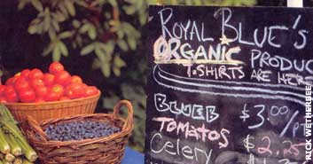
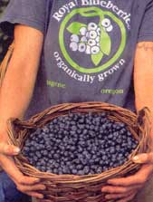
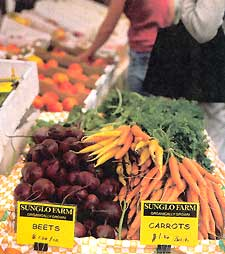

From organic to authentic
As America's interest in natural and organic foods grows, the food industry's hype seems to expand proportionally. Consumers are finally realizing whole foods are more nutritious than highly processed products and seasonal, locally grown produce is a more sustainable, intelligent choice than fruits and vegetables shipped thousands of miles. Awareness about the host of problems caused by chemically dependent agriculture continues to grow.
But even when people are motivated to make better choices, the hype, exaggeration and downright deception of the food industry can make it tough for consumers to figure out which products are the best. Agriculture spends $100 billion each year to produce the food we eat. Food companies spend four times that much - $400 billion annually - to market the resulting products, according to U.S. Department of Agriculture (USDA) estimates. So much high-powered advertising obscures the truth about many products.
The Center for Science in the Public Interest (CSPI), a nonprofit food and nutrition advocacy group, summed up a key part of this problem in a complaint filed with the Food and Drug Administration this summer: "Manufacturers continue to misleadingly represent the ingredient contents of their products, emphasizing the more healthful, costly ingredients far out of proportion to their actual presence in the foods. Those claims imply that such products are rich in such ingredients, whereas they actually contain only small amounts or sometimes none at all." CSPI cited examples to support their complaints: Quaker's "Strawberries and Cream" Oatmeal with no strawberries; Betty Crocker's "Carrot Cake" with more salt than (powdered) carrots; and "Real Fruit Beverages" that are 95 percent water and sugar.
Now that the federal government is standardizing the organic label for the convenience of the big food companies, the hype machine is gearing up to confuse the consumer in new ways, endangering public health and sustainable, small-scale agriculture.
Public concern about food quality has been growing for several decades, fueled in part by the dishonest advertising behavior CSPI has highlighted. Now we have genetic engineering, pesticide residue, irradiation, E. coli, salmonella and other food safety issues to worry about. More and more people are turning to organic products, believing them to be natural, pure, nutritious and better tasting.
As a result, organic food sales are booming, now a $7 billion a year business in the United States. Small companies that pioneered organic products are being bought up by the handful of multinational companies that control so much of our food supply.
Organic foods whether from small or large companies, are certainly a better choice than nonorganic, both for your family and the environment. Organic products are free of toxic pesticides, chemical fertilizers and controversial sewage sludge (often called "biosolids"). Federal law also prohibits genetic engineering and irradiation in food labeled "organic," and allows a limited, carefully selected number of nontoxic additives in processed organic foods. The law severely restricts use of antibiotics and growth hormones.
But the USDA's Certified Organic label still doesn't ensure that consumers are getting food that was grown in a sustainable and socially just manner, or with concern for flavor and nutrition. Nothing in the new law prevents supermarkets from giving us bland organic produce that has been selected for shipping qualities rather than flavor. The law doesn't prevent organic produce from being shipped thousands of miles, using just as much energy as nonorganic produce. (Some organic companies are even selling frozen vegetables imported from as far away as China.) Buying organic doesn't let your food dollars support your local community, unless you pay close attention to where the food comes from. And uniform organic labeling won't prevent manufacturers from continuing to use false and misleading advertising.
But even if you can't grow all your own food, you don't have to accept the limitations imposed by our current federal food laws and centralized, industrialized food system. Thousands of small-scale growers in this country produce truly good food-fresh, nutritious, great-tasting and sustainably grown. All you have to do is find the ones in your community. Two useful resources are the Directory of Community Supported Agriculture (see below ) at www.csacenter.org and the USDA's National Directory of Farmers Markets, www.ams.usda.gov/farmersmarkets/map.htm.
As you seek out truly good food, keep your eye out for a new label that will begin to appear next season. Maine farmer Eliot Coleman invites local growers to join him in using a new label, "Authentic," to describe the food they produce in his article .
The Community Supported Agriculture (CSA) movement offers you the ability to buy your food directly from local family farms. Each season, the farmers sell "shares" of what they produce to customers. The customers get these shares of truly farm-fresh products weekly (local means no lengthy shipping), and the farmer gets a fair price for the products, rather than having to be at the mercy of unfriendly markets and corporate go-betweens.
To learn more about the CSA movement, or to find a CSA near you, check out the Robyn Van En Center for CSA Resources' Web site at www.csacenter.org; or call (717) 261-2880. Robyn Van En brought the movement to North America in 1985. If you are interested in starting a CSA in your community, Sharing theHarvest: A Guide to Community-Supported Agriculture by Elizabeth Henderson with Robyn Van En, can provide you with the information you need to get going.
|
 Buying local, organic produce brings fresh, great-tasting nutrition to your table. |
 If you can't grow your own, locally grown organic produce is often available and supports your local economy. |
 |